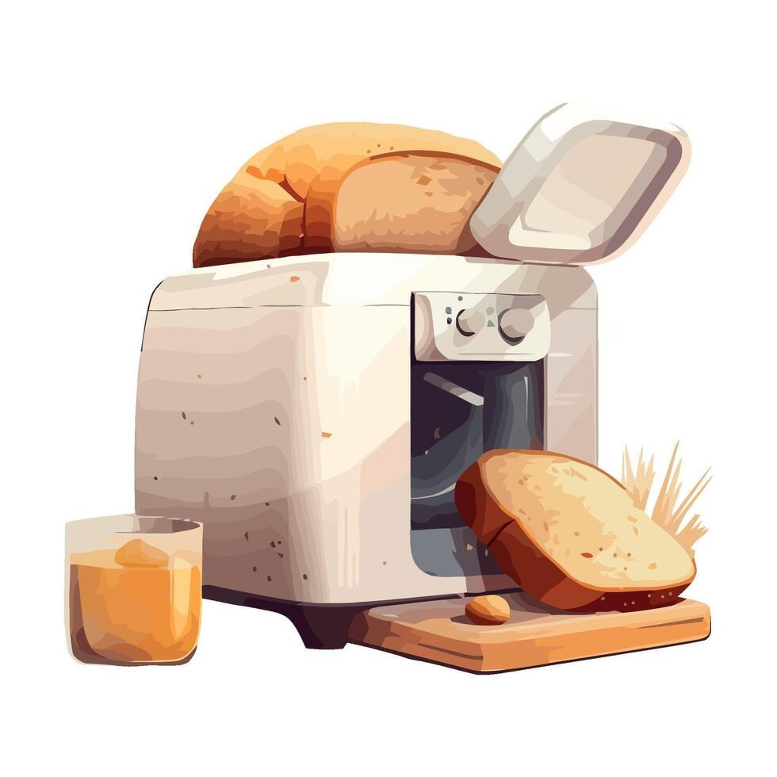
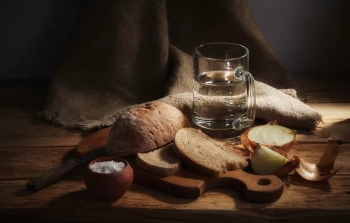
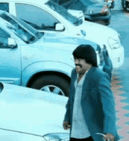

Virtual Toaster — Mallu Punchline Edition
Toast visually, hear the sizzle and then… meme. No calories.
Make nonsense breakfast — step by step
Click
Enable Sounds & Start
once (a browser requirement) → then press
Toast!
Enable Sounds & Start
Toast!
Cancel
Toasting time
4s
Status: idle — enable sounds to start.
ayyo poyee ayyayyo poyeee
Try again
Close
